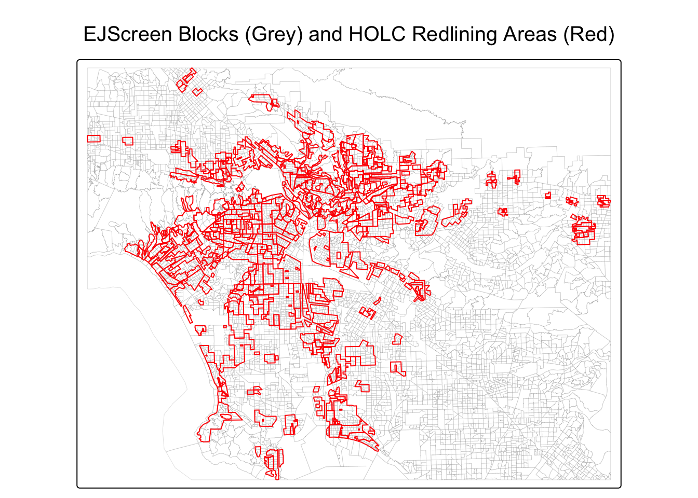
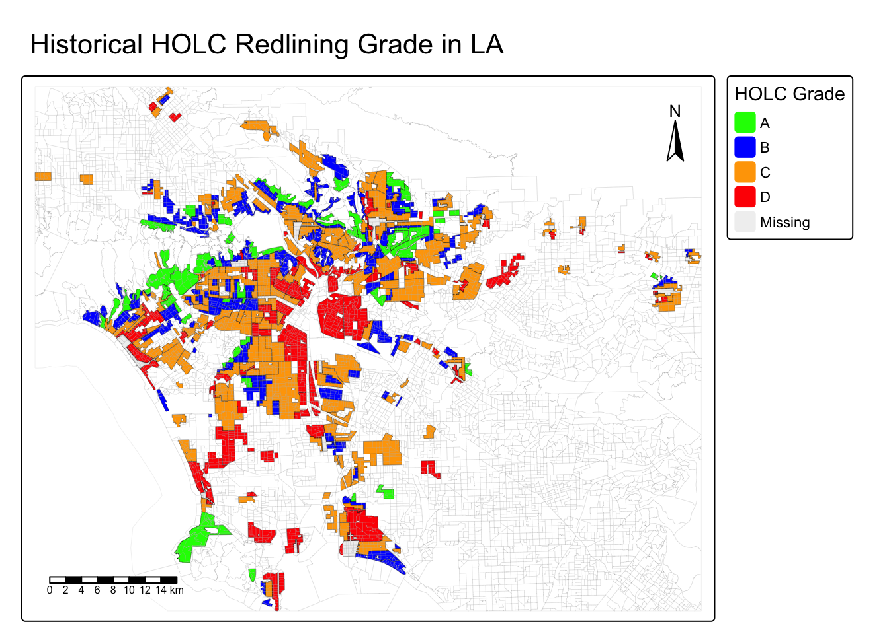
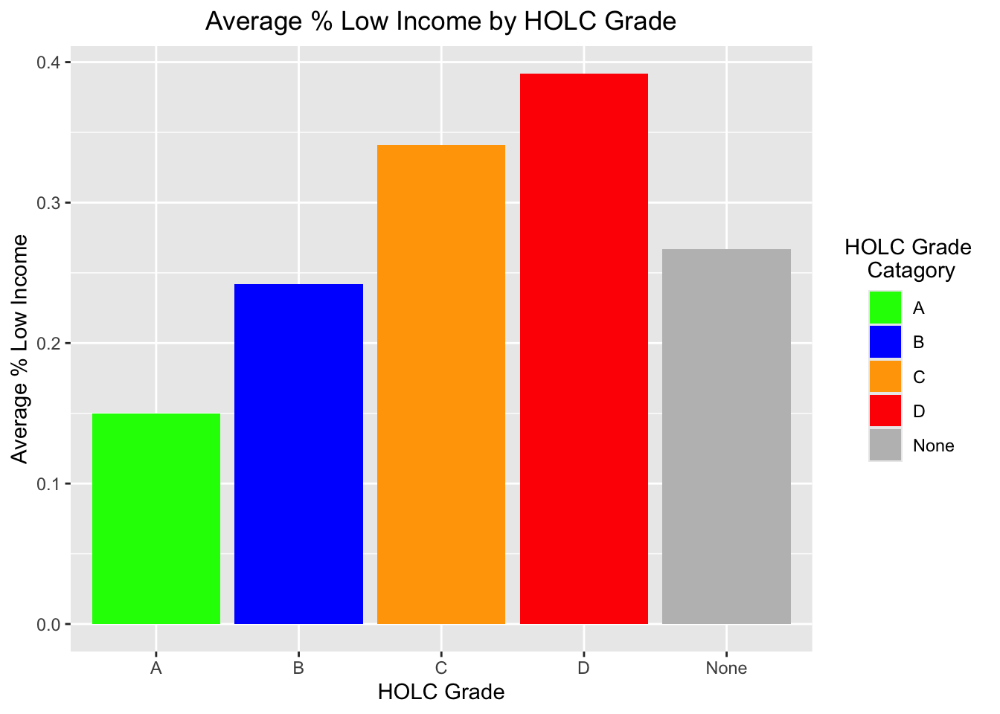
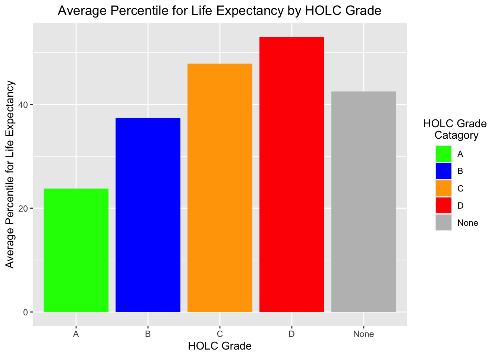
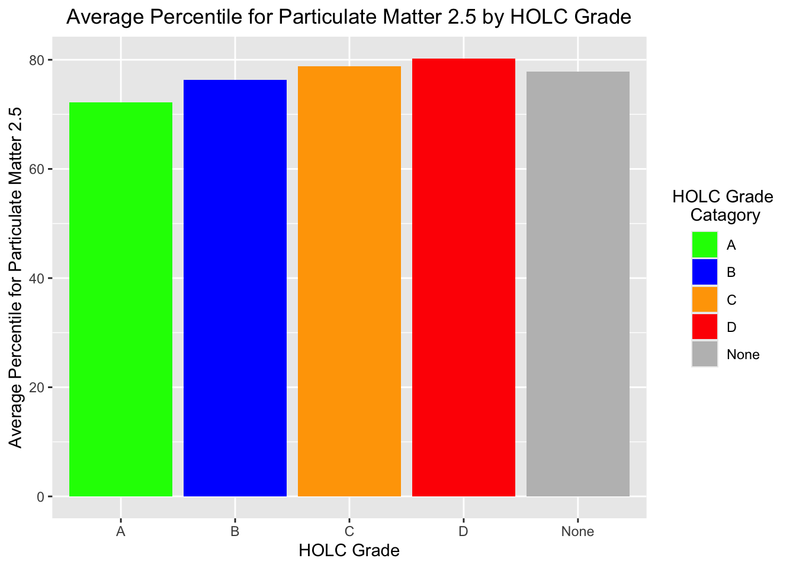
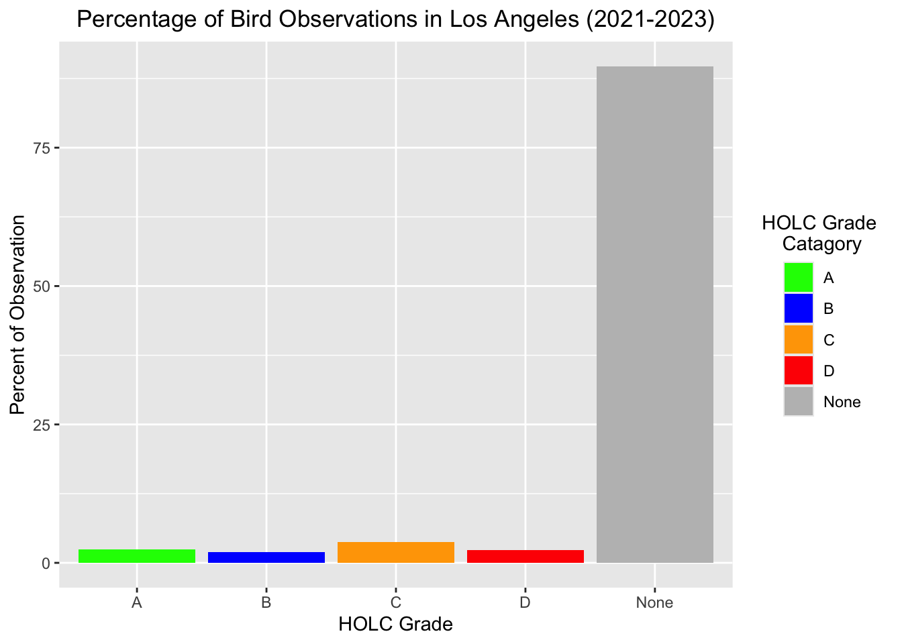
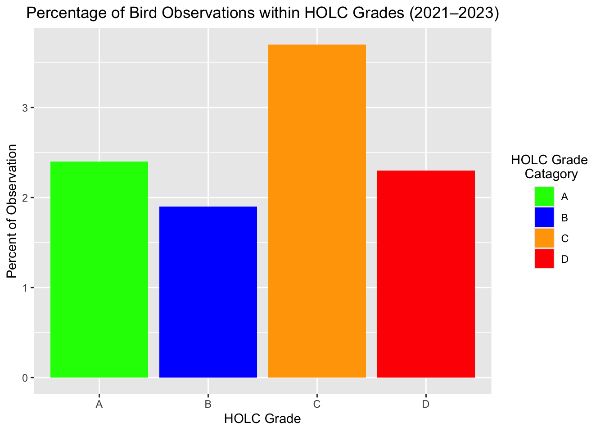
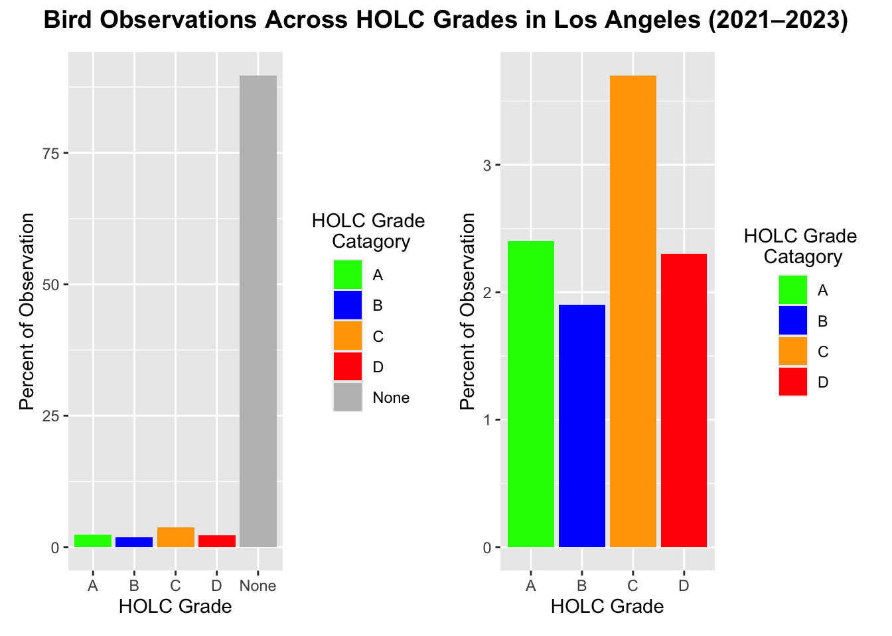

# Load in all the Necessary Packages for upcoming tasks
rm(list = ls())
pacman::p_load(tidyverse, sf, stars,
ggplot2, tmap, grid,
here, viridisLite, dplyr,
janitor, knitr, kableExtra, patchwork)HOLC Redlining and Biodiversity Observations
Redlining, Justice, and Biodiversity in LA
This project investigates how historical redlining in Los Angeles to today’s enviromental and ecological patterns. We are going to use EPA’s EJscreen data, Mapping Inequality Project data, and GBIF Bird Observations data to explore whether neighborhoods that were marked poorly by the HOLC would have any burdens and see the biodiversity sampling as well.
Initial Setup of the Project
# Read in EJScreen data
# Commented out to save time
ejscreen <- st_read(here("data",
"ejscreen",
"EJSCREEN_2023_BG_StatePct_with_AS_CNMI_GU_VI.gdb"),
quiet = TRUE)
# Read in HOLC Redlining Data
# Commented out to save time
birds <- st_read(here("data",
"gbif-birds-LA",
"gbif-birds-LA.shp"),
quiet = TRUE)
# Read in HOLC Redlining Data
# Commented out to save time
map_inequal <- st_read(here("data",
"mapping-inequality",
"mapping-inequality-los-angeles.json"),
quiet = TRUE)# Create a system that tells us the warning about Coordinate system
if(st_crs(ejscreen)$epsg != 3310 |
st_crs(map_inequal)$epsg != 3310 |
st_crs(birds)$epsg != 3310) {
warning("One or more datasets are not EPSG: 3310. Please st_transform().")
} else {
message("We are all good to go! Enjoy mapping!")
}Warning: One or more datasets are not EPSG: 3310. Please st_transform().# Check if HOLC grade column exists and if not, abort the program.
if(!"grade" %in% names(map_inequal)) {
stop("HOLC data is missing the 'grade' column. Exit!")
} else {
message("Again, good to go!")
}Again, good to go!# Check the data type
st_layers(here::here("data",
"ejscreen",
"EJSCREEN_2023_BG_StatePct_with_AS_CNMI_GU_VI.gdb"))Driver: OpenFileGDB
Available layers:
layer_name geometry_type features fields
1 EJSCREEN_StatePctiles_with_AS_CNMI_GU_VI Multi Polygon 243021 223
crs_name
1 WGS 84 / Pseudo-Mercator# Confirm EPSG Number (Coordinate System)
st_crs(ejscreen)Coordinate Reference System:
User input: WGS 84 / Pseudo-Mercator
wkt:
PROJCRS["WGS 84 / Pseudo-Mercator",
BASEGEOGCRS["WGS 84",
ENSEMBLE["World Geodetic System 1984 ensemble",
MEMBER["World Geodetic System 1984 (Transit)"],
MEMBER["World Geodetic System 1984 (G730)"],
MEMBER["World Geodetic System 1984 (G873)"],
MEMBER["World Geodetic System 1984 (G1150)"],
MEMBER["World Geodetic System 1984 (G1674)"],
MEMBER["World Geodetic System 1984 (G1762)"],
MEMBER["World Geodetic System 1984 (G2139)"],
MEMBER["World Geodetic System 1984 (G2296)"],
ELLIPSOID["WGS 84",6378137,298.257223563,
LENGTHUNIT["metre",1]],
ENSEMBLEACCURACY[2.0]],
PRIMEM["Greenwich",0,
ANGLEUNIT["degree",0.0174532925199433]],
ID["EPSG",4326]],
CONVERSION["Popular Visualisation Pseudo-Mercator",
METHOD["Popular Visualisation Pseudo Mercator",
ID["EPSG",1024]],
PARAMETER["Latitude of natural origin",0,
ANGLEUNIT["degree",0.0174532925199433],
ID["EPSG",8801]],
PARAMETER["Longitude of natural origin",0,
ANGLEUNIT["degree",0.0174532925199433],
ID["EPSG",8802]],
PARAMETER["False easting",0,
LENGTHUNIT["metre",1],
ID["EPSG",8806]],
PARAMETER["False northing",0,
LENGTHUNIT["metre",1],
ID["EPSG",8807]]],
CS[Cartesian,2],
AXIS["easting (X)",east,
ORDER[1],
LENGTHUNIT["metre",1]],
AXIS["northing (Y)",north,
ORDER[2],
LENGTHUNIT["metre",1]],
USAGE[
SCOPE["Web mapping and visualisation."],
AREA["World between 85.06°S and 85.06°N."],
BBOX[-85.06,-180,85.06,180]],
ID["EPSG",3857]]st_crs(map_inequal)Coordinate Reference System:
User input: WGS 84
wkt:
GEOGCRS["WGS 84",
DATUM["World Geodetic System 1984",
ELLIPSOID["WGS 84",6378137,298.257223563,
LENGTHUNIT["metre",1]]],
PRIMEM["Greenwich",0,
ANGLEUNIT["degree",0.0174532925199433]],
CS[ellipsoidal,2],
AXIS["geodetic latitude (Lat)",north,
ORDER[1],
ANGLEUNIT["degree",0.0174532925199433]],
AXIS["geodetic longitude (Lon)",east,
ORDER[2],
ANGLEUNIT["degree",0.0174532925199433]],
ID["EPSG",4326]]st_crs(birds)Coordinate Reference System:
User input: WGS 84
wkt:
GEOGCRS["WGS 84",
DATUM["World Geodetic System 1984",
ELLIPSOID["WGS 84",6378137,298.257223563,
LENGTHUNIT["metre",1]]],
PRIMEM["Greenwich",0,
ANGLEUNIT["degree",0.0174532925199433]],
CS[ellipsoidal,2],
AXIS["latitude",north,
ORDER[1],
ANGLEUNIT["degree",0.0174532925199433]],
AXIS["longitude",east,
ORDER[2],
ANGLEUNIT["degree",0.0174532925199433]],
ID["EPSG",4326]]# Let's make sure it is in EPGS 3310 for Consistency
# California Albers - EPSG 3310
ejscreen <- st_transform(ejscreen, 3310)
birds <- st_transform(birds, 3310)
map_inequal <- st_transform(map_inequal, 3310)# We will subsetting dataset to LA by using `st_crop()`
# Using Map Inequality Project as a parameter
ejs_LA <- st_crop(ejscreen, st_bbox(map_inequal))
# Let's save the subset for future use
st_write(ejs_LA, here("data",
"ejscreen",
"EJSCREEN_LA.gpkg"),
quiet = TRUE)# Read in subsetted LA
ejscreen_LA <- st_read(here("data",
"ejscreen",
"EJSCREEN_LA.gpkg"),
quiet = TRUE) %>%
clean_names()Part 1 - Environmental Justice
Initial Map
# Quick plotting to check the map
tmap_mode("plot")
tm_shape(ejscreen_LA) +
tm_borders(col = "grey", lwd = 0.2) + # Line width thinner
tm_shape(map_inequal) +
tm_borders(col = "red", lwd = 1) + # Line width thicker
tm_title("EJScreen Blocks (Grey) and HOLC Redlining Areas (Red)")
Create a Map of Historical Redlining Neighborhoods
# Plot the map! Always make make sure to put static plotting mode
tmap_mode("plot")
# We are going to fill the map with colors by HOLC Grade
tm_shape(map_inequal) +
tm_fill("grade",
palette = c("A" = "green",
"B" = "blue",
"C" = "orange",
"D" = "red"),
title = "HOLC Grade") +
tm_borders(col = "black", lwd = 0.2) +
tm_shape(ejscreen_LA) +
tm_borders(col = "grey", lwd = 0.1) +
tm_scalebar(position = c("left", "bottom")) +
tm_compass(type = "arrow",
position = c("right", "top")) +
tm_title("Historical HOLC Redlining Grade in LA")
Summarizing Table
# Initialize new block group with centroids
# Spatially Join with HOLC grades
# Look for HOLC Polygon in `map_inequal`
# Remove the geometry column to use as data frame
ejscreen_holc <- ejscreen_LA %>%
st_join(map_inequal %>%
select(grade),
join = st_intersects) %>%
st_drop_geometry()# Create Summary table
# Which has percentage of block groups per HOLC grade
ejscreen_summary_table <- ejscreen_holc %>%
mutate(grade = if_else(is.na(grade),
"None",
grade)) %>% # Census black group X within HOLC grade
group_by(grade) %>%
summarize(num_block_grps = n(), .groups = "drop") %>%
mutate(percent = round(100 * num_block_grps / sum(num_block_grps), 1)) %>%
arrange(factor(grade, levels = c("A", "B", "C", "D", "None")))
# Use `kableExtra` package to make presentable table
ejscreen_summary_table %>%
kbl(col.names = c("HOLC Grade",
"Number of Block Groups",
"Percent of Total"),
caption = "Distribution of Cencus Block Groups by HOLC Grade in LA",
align = "c") %>%
kable_styling(full_width = FALSE,
bootstrap_options = c("striped",
"hover",
"condensed"),
position = "center") %>%
column_spec(3, color = "white", background = "dodgerblue")| HOLC Grade | Number of Block Groups | Percent of Total |
|---|---|---|
| A | 449 | 4.5 |
| B | 1239 | 12.5 |
| C | 3058 | 30.9 |
| D | 1346 | 13.6 |
| None | 3804 | 38.4 |
Data Visualization
# Create data frame that has matching HOLC Grade with the map
holc_palette <- c("A" = "green",
"B" = "blue",
"C" = "orange",
"D" = "red",
"None" = "grey")
# Subset and calculate means of HOLC grade for a visualization
# Drop the geometry to make sure to run smoothly
# We will use 'lowincpct' - % low income
# 'p_lifeexppct' - percentile for low life expectancy
# 'p_pm25' - percentile for Particulate Matter 2.5
ejscreen_mean <- ejscreen_holc %>%
st_drop_geometry() %>%
mutate(grade = if_else(is.na(grade), "None", grade)) %>%
group_by(grade) %>%
summarize(avg_low_income = mean(lowincpct, na.rm = TRUE),
avg_life_exp = mean(p_lifeexppct, na.rm = TRUE),
avg_pm25 = mean(p_pm25, na.rm = TRUE)) %>%
arrange(factor(grade, levels = c("A", "B", "C", "D", "None")))# Plot first visualization - % low income by HOLC grade
ggplot(ejscreen_mean, aes(x = grade, y = avg_low_income, fill = grade)) +
geom_col() +
scale_fill_manual(values = holc_palette) +
labs(title = "Average % Low Income by HOLC Grade",
x = "HOLC Grade",
y = "Average % Low Income",
fill = "HOLC Grade \nCatagory") +
theme(plot.title = element_text(hjust = 0.5),
legend.title.align = 0.5)
# Plot second visualization - percentile for low life expectancy
ggplot(ejscreen_mean, aes(x = grade, y = avg_life_exp, fill = grade)) +
geom_col() +
scale_fill_manual(values = holc_palette) +
labs(title = "Average Percentile for Life Expectancy by HOLC Grade",
x = "HOLC Grade",
y = "Average Percentile for Life Expectancy",
fill = "HOLC Grade \nCatagory") +
theme(plot.title = element_text(hjust = 0.5),
legend.title.align = 0.5)
# Plot third visualization - percentile for Particulate Matter 2.5
ggplot(ejscreen_mean, aes(x = grade, y = avg_pm25, fill = grade)) +
geom_col() +
scale_fill_manual(values = holc_palette) +
labs(title = "Average Percentile for Particulate Matter 2.5 by HOLC Grade",
x = "HOLC Grade",
y = "Average Percentile for Particulate Matter 2.5",
fill = "HOLC Grade \nCatagory") +
theme(plot.title = element_text(hjust = 0.5),
legend.title.align = 0.5)
# Plot fourth visualization - Use `facet_wrap()` to put all three together.
ejscreen_long <- ejscreen_mean %>%
pivot_longer(cols = starts_with("avg_"),
names_to = "measure",
values_to = "value")
ggplot(ejscreen_long, aes(x = grade, y = value, fill = grade)) +
geom_col() +
scale_fill_manual(values = holc_palette) +
facet_wrap(~ measure, scales = "free_y") +
labs(title = "Environmental & Socioeconomic Status by HOLC Grade",
x = "HOLC Grade",
y = "Mean",
fill = "HOLC Grade \nCatagory") +
theme(plot.title = element_text(hjust = 0.5),
legend.title.align = 0.5)
Reflection
Low Income
- We found that there is increasing trend of A to D and D areas have highest proportion of low-income residents and A. The redlining patterns indicate the economic disadvantages.
Life Expectancy
- We found that there is increasing trend of A to D of lower life expectancy. The historically red-lined areas have lower life expectancy (C - D) than others (A - B). Long-term health disadvantages are shown.
\(PM_2._5\) Pollution
- Same as other data points, there is increasing trend of air pollution from A to D. Residents of C and D areas are more likely to be exposed to higher air pollution. The environmental burden and low socioeconomic shows likely connection to each other.
It is evident that historically worse neighborhood according to HOLC grade, the poorer outcome shows in socioeconomically and environmentally.
Part 2 - Biodiversity
Legacy of Historical Redlining in LA of Bird Observation
# Once again, make sure CRS matches
# Both data needs to match EPSG 3310
st_crs(birds)Coordinate Reference System:
User input: EPSG:3310
wkt:
PROJCRS["NAD83 / California Albers",
BASEGEOGCRS["NAD83",
DATUM["North American Datum 1983",
ELLIPSOID["GRS 1980",6378137,298.257222101,
LENGTHUNIT["metre",1]]],
PRIMEM["Greenwich",0,
ANGLEUNIT["degree",0.0174532925199433]],
ID["EPSG",4269]],
CONVERSION["California Albers",
METHOD["Albers Equal Area",
ID["EPSG",9822]],
PARAMETER["Latitude of false origin",0,
ANGLEUNIT["degree",0.0174532925199433],
ID["EPSG",8821]],
PARAMETER["Longitude of false origin",-120,
ANGLEUNIT["degree",0.0174532925199433],
ID["EPSG",8822]],
PARAMETER["Latitude of 1st standard parallel",34,
ANGLEUNIT["degree",0.0174532925199433],
ID["EPSG",8823]],
PARAMETER["Latitude of 2nd standard parallel",40.5,
ANGLEUNIT["degree",0.0174532925199433],
ID["EPSG",8824]],
PARAMETER["Easting at false origin",0,
LENGTHUNIT["metre",1],
ID["EPSG",8826]],
PARAMETER["Northing at false origin",-4000000,
LENGTHUNIT["metre",1],
ID["EPSG",8827]]],
CS[Cartesian,2],
AXIS["easting (X)",east,
ORDER[1],
LENGTHUNIT["metre",1]],
AXIS["northing (Y)",north,
ORDER[2],
LENGTHUNIT["metre",1]],
USAGE[
SCOPE["State-wide spatial data management."],
AREA["United States (USA) - California."],
BBOX[32.53,-124.45,42.01,-114.12]],
ID["EPSG",3310]]st_crs(map_inequal)Coordinate Reference System:
User input: EPSG:3310
wkt:
PROJCRS["NAD83 / California Albers",
BASEGEOGCRS["NAD83",
DATUM["North American Datum 1983",
ELLIPSOID["GRS 1980",6378137,298.257222101,
LENGTHUNIT["metre",1]]],
PRIMEM["Greenwich",0,
ANGLEUNIT["degree",0.0174532925199433]],
ID["EPSG",4269]],
CONVERSION["California Albers",
METHOD["Albers Equal Area",
ID["EPSG",9822]],
PARAMETER["Latitude of false origin",0,
ANGLEUNIT["degree",0.0174532925199433],
ID["EPSG",8821]],
PARAMETER["Longitude of false origin",-120,
ANGLEUNIT["degree",0.0174532925199433],
ID["EPSG",8822]],
PARAMETER["Latitude of 1st standard parallel",34,
ANGLEUNIT["degree",0.0174532925199433],
ID["EPSG",8823]],
PARAMETER["Latitude of 2nd standard parallel",40.5,
ANGLEUNIT["degree",0.0174532925199433],
ID["EPSG",8824]],
PARAMETER["Easting at false origin",0,
LENGTHUNIT["metre",1],
ID["EPSG",8826]],
PARAMETER["Northing at false origin",-4000000,
LENGTHUNIT["metre",1],
ID["EPSG",8827]]],
CS[Cartesian,2],
AXIS["easting (X)",east,
ORDER[1],
LENGTHUNIT["metre",1]],
AXIS["northing (Y)",north,
ORDER[2],
LENGTHUNIT["metre",1]],
USAGE[
SCOPE["State-wide spatial data management."],
AREA["United States (USA) - California."],
BBOX[32.53,-124.45,42.01,-114.12]],
ID["EPSG",3310]]# Check how far the Bird data goes back
# Make sure it goes back to 2023
birds %>%
arrange(desc(year)) %>%
head()Simple feature collection with 6 features and 1 field
Geometry type: POINT
Dimension: XY
Bounding box: xmin: 142566.1 ymin: -463994.2 xmax: 196660.8 ymax: -420856.1
Projected CRS: NAD83 / California Albers
year geometry
1 2023 POINT (196660.8 -420856.1)
2 2023 POINT (153463.5 -463994.2)
3 2023 POINT (142566.1 -449348)
4 2023 POINT (145721.7 -446854.3)
5 2023 POINT (158536.1 -462070.9)
6 2023 POINT (174711.9 -422973.2)# Filter the Bird data from 2021 to the earliest (2023)
birds_current <- birds %>%
filter(year >= 2021)
# Spatially join the bird record to HOLC grade
# Make sure to drop geometry to calculate smoothly
birds_holc <- birds_current %>%
st_join(map_inequal["grade"],
join = st_within) %>%
st_drop_geometry()# Create Summary table
# Add birds outside of HOLC grade
birds_summary_table <- birds_holc %>%
mutate(grade = if_else(is.na(grade),
"None",
grade)) %>%
count(grade, name = "num_obs") %>%
mutate(percent = round(100 * num_obs / sum(num_obs), 1)) %>%
arrange(factor(grade, levels = c("A", "B", "C", "D")))
# Use `kableExtra` package to make presentable table
birds_summary_table %>%
kbl(col.names = c("HOLC Grade",
"Number of Observation",
"Percent of Total"),
caption = "Percentage of Bird Observations within HOLC Grades (2021–2023)",
align = "c") %>%
kable_styling(full_width = FALSE,
bootstrap_options = c("striped",
"hover",
"condensed"),
position = "center") %>%
column_spec(3, color = "white", background = "dodgerblue")| HOLC Grade | Number of Observation | Percent of Total |
|---|---|---|
| A | 30345 | 2.4 |
| B | 24197 | 1.9 |
| C | 47973 | 3.7 |
| D | 30246 | 2.3 |
| None | 1156104 | 89.7 |
With the None
# Create data visualization using the bar graph
holc_grade_all <- ggplot(birds_summary_table,
aes(x = grade, y = percent, fill = grade)) +
geom_col() +
scale_fill_manual(values = holc_palette) +
labs(title = "Percentage of Bird Observations in Los Angeles (2021-2023)",
x = "HOLC Grade",
y = "Percent of Observation",
fill = "HOLC Grade \nCatagory") +
theme(plot.title = element_text(hjust = 0.5),
legend.title.align = 0.5)
holc_grade_all
Without the None
# Create data visualization using the bar graph
# Removed "None" Catagory to better distinguish A to D area
holc_remove_none <- ggplot(birds_summary_table %>% filter(grade != "None"),
aes(x = grade, y = percent, fill = grade)) +
geom_col() +
scale_fill_manual(values = holc_palette) +
labs(title = "Percentage of Bird Observations within HOLC Grades (2021–2023)",
x = "HOLC Grade",
y = "Percent of Observation",
fill = "HOLC Grade \nCatagory") +
theme(plot.title = element_text(hjust = 0.5),
legend.title.align = 0.5)
holc_remove_none
# Clean the title
holc_all_clean <- holc_grade_all + theme(plot.title = element_blank())
holc_none_clean <- holc_remove_none + theme(plot.title = element_blank())
# Show side-by-side
(holc_all_clean + holc_none_clean) +
plot_annotation(
title = "Bird Observations Across HOLC Grades in Los Angeles (2021–2023)",
theme = theme(plot.title = element_text(hjust = 0.5, size = 14, face = "bold"),
plot.subtitle = element_text(hjust = 0.5, size = 11)))
Reflection
Q: Why might we have obtained different results in our analysis? What did the paper consider that we did not?
Our analysis of bird observations in LA between 2021 and 2023 shows that the bird data are uneven throughout the HOLC grade areas. The most significant difference from the Ellis-Soto et al. (2023) and our data is that our focus was only on the LA. In contrast, the paper investigated 195 cities with respect to a population greater than 30 million people in the USA. Their finding is that desirable, A and B areas, of metropolitan cities have more than twice the density of regions red-lined as “hazardous” areas. Our analysis differs from the start, as the paper uses a decade-long time period, whereas we are only focusing on a shorter time frame. Our sample could be biased for different reasons due to the limited data compared to the paper.
README
See below for the README correction.